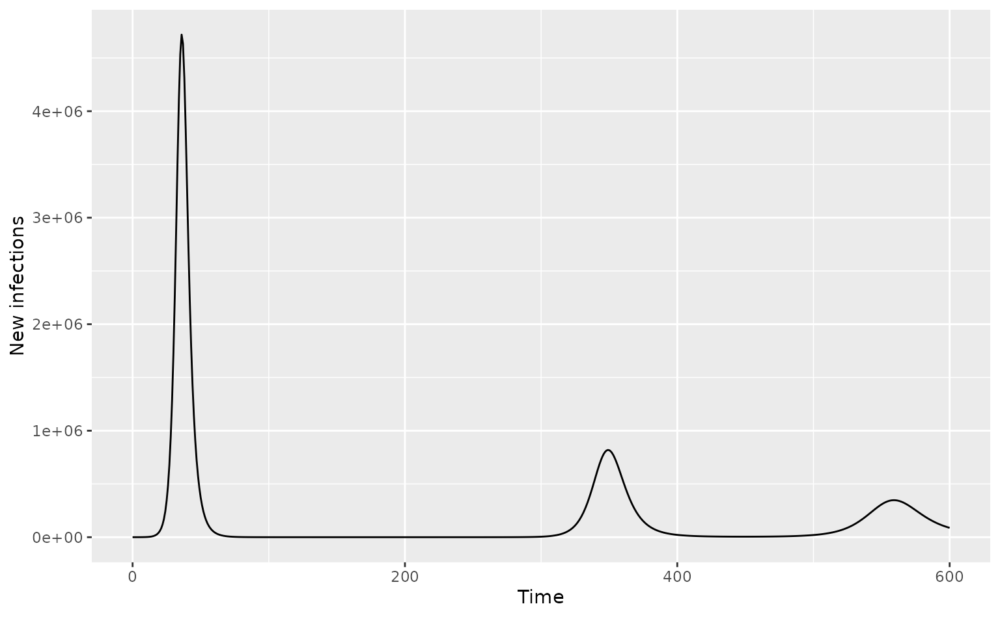
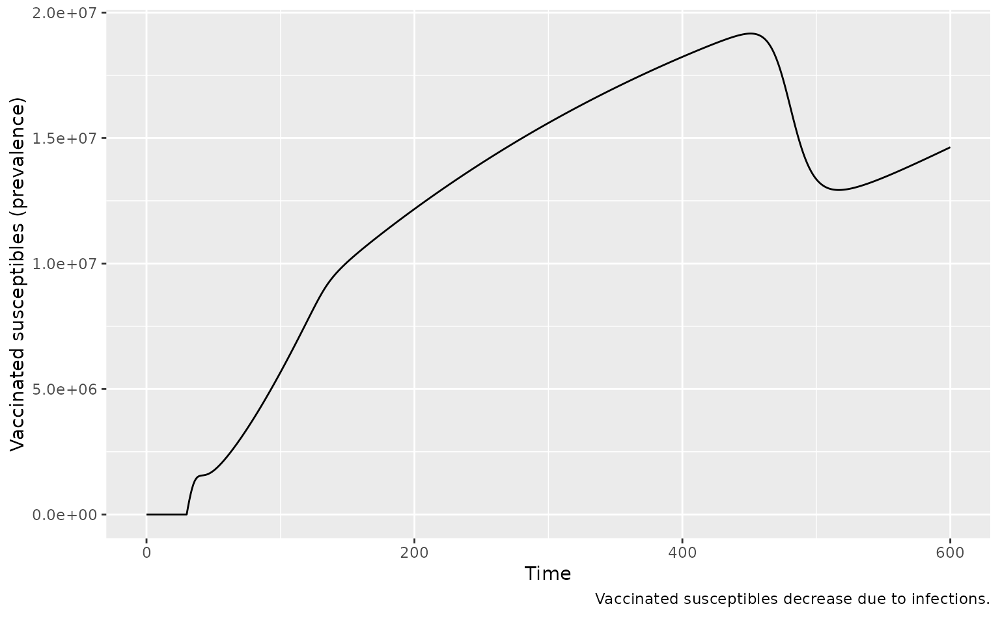
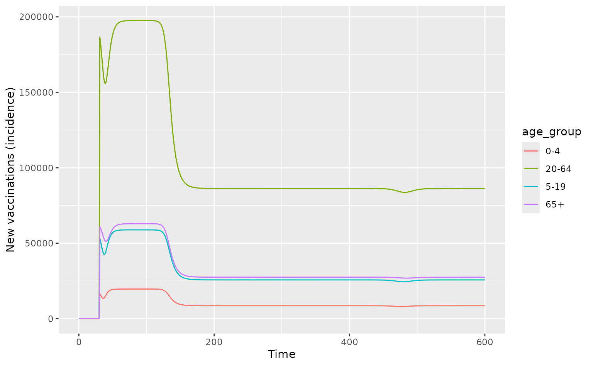
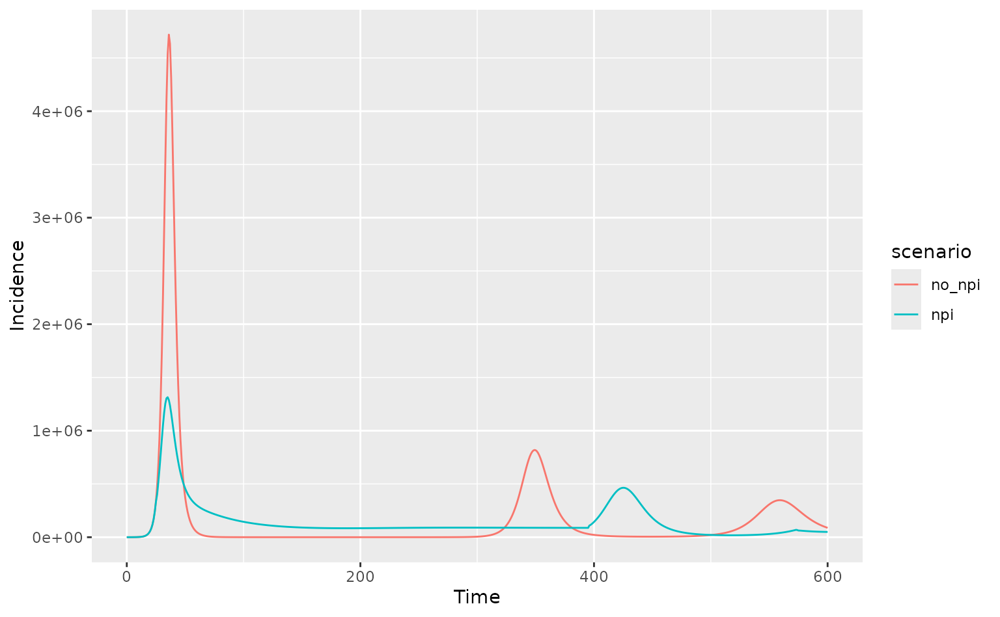

library(daedalus)
library(ggplot2)
library(dplyr)
#>
#> Attaching package: 'dplyr'
#> The following objects are masked from 'package:stats':
#>
#> filter, lag
#> The following objects are masked from 'package:base':
#>
#> intersect, setdiff, setequal, unionThis vignette is intended as a visual check on daedalus features in development.
Basic daedalus2() usage
This example shows (checks) that daedalus2() output
works with pre-built function get_incidence() written for
daedalus().
output <- daedalus2("GBR", "influenza_2009")
# get incidence data using function developed for daedalus()
data <- get_incidence(output, "infections")
ggplot(data) +
geom_line(
aes(time, value)
) +
labs(x = "Time", y = "New infections")
Vaccination
This section aims to be a visual check on vaccination in
daedalus2() as this function does not currently log new
vaccinations.
# high vaccination rate but low uptake limit
vax <- daedalus_vaccination("high", uptake_limit = 40, start_time = 30)
output <- daedalus2("GBR", "influenza_2009", vaccine_investment = vax)
data <- get_data(output) %>%
filter(vaccine_group == "vaccinated", compartment == "susceptible") %>%
group_by(time) %>%
summarise(
value = sum(value)
)
# check that vaccinations begin at time = 100
ggplot(data, aes(time, value)) +
geom_line() +
labs(
x = "Time", y = "Vaccinated susceptibles (prevalence)",
caption = "Vaccinated susceptibles decrease due to infections."
)
# plot new vaccinations (incidence)
# NOTE: dashboard shows cumulative vaccinations which are recalculated
vax_data <- get_new_vaccinations(output, groups = "age_group")
ggplot(vax_data, aes(time, new_vaccinations)) +
geom_line(
aes(col = age_group)
) +
labs(
x = "Time",
y = "New vaccinations (incidence)"
)
Check that fully protective (non-leaky) vaccination does not see a mid-epidemic reduction in vaccinated susceptibles.
# efficacy is 100 for non-leaky vaccination
vax <- daedalus_vaccination(
"high",
start_time = 30, efficacy = 100,
uptake_limit = 40
)
output <- daedalus2("GBR", "influenza_2009", vaccine_investment = vax)
data <- get_data(output) %>%
filter(vaccine_group == "vaccinated", compartment == "susceptible") %>%
group_by(time) %>%
summarise(
value = sum(value)
)
# check that vaccinations begin at time = 100
ggplot(data, aes(time, value)) +
geom_line() +
labs(
x = "Time", y = "Vaccinated susceptibles (prevalence)",
caption = "Vaccinated susceptibles do not decrease due to infections."
)Events
This section is a visual check on events.
# trigger event on low hospital capacity
x <- daedalus_country("GBR")
x$hospital_capacity <- 1e3
x
#> <daedalus_country>
#> • Name: United Kingdom
#> • Demography: 3924490, 11762039, 39536463, and 12663012
#> • Community contact matrix:
#> 0-4 5-19 20-64 65+
#> 0-4 1.9157895 1.5379290 4.704999 0.2863619
#> 5-19 0.5131412 8.7339228 5.874591 0.7418483
#> 20-64 0.4670302 1.7476822 7.830182 1.0685802
#> 65+ 0.1180517 0.7548304 3.531487 1.5212437
#> • GNI (PPP $): 45870
#> • Hospital capacity: 1000
output_npi <- daedalus2(
x, "influenza_2009",
response_strategy = "elimination"
)
output_no_npi <- daedalus2(
x, "influenza_2009"
)
# get incidence data and check for differences
data_npi <- get_incidence(output_npi, "infections")
data_no_npi <- get_incidence(output_no_npi, "infections")
# add scenario marker and plot comparison
data_npi$scenario <- "npi"
data_no_npi$scenario <- "no_npi"
data <- bind_rows(data_npi, data_no_npi)
ggplot(data, aes(time, value, col = scenario)) +
geom_line() +
labs(
x = "Time", y = "Incidence"
)